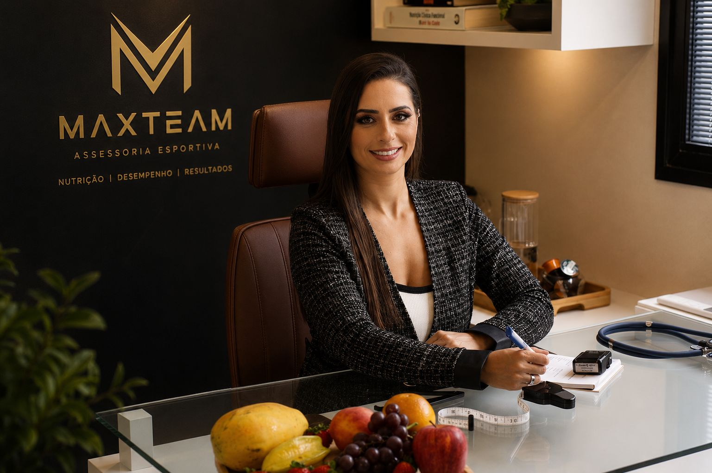
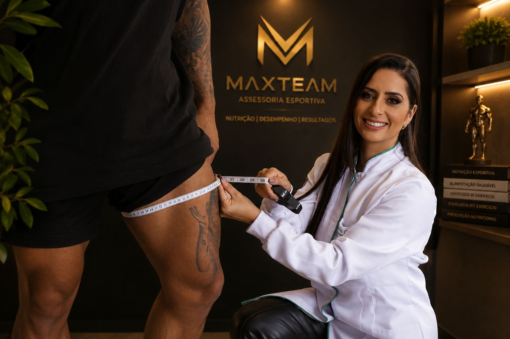
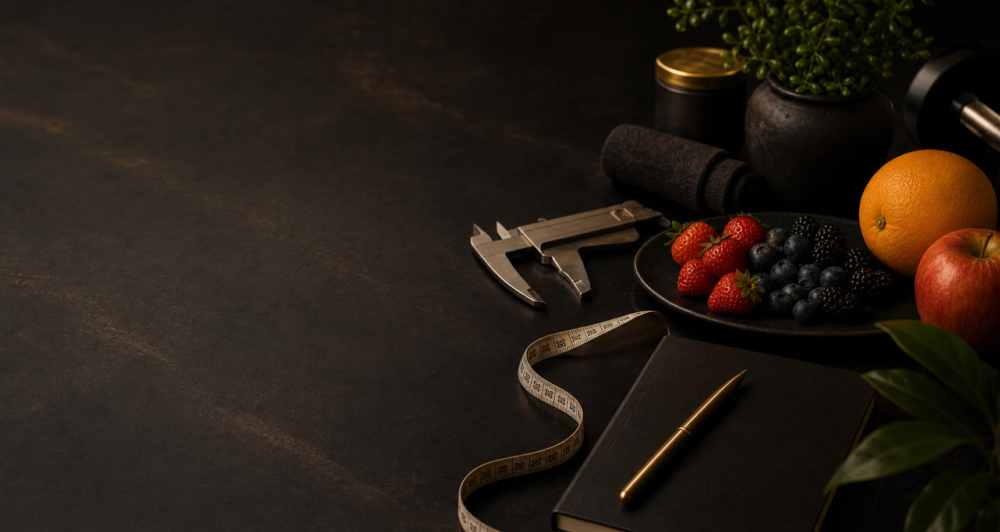
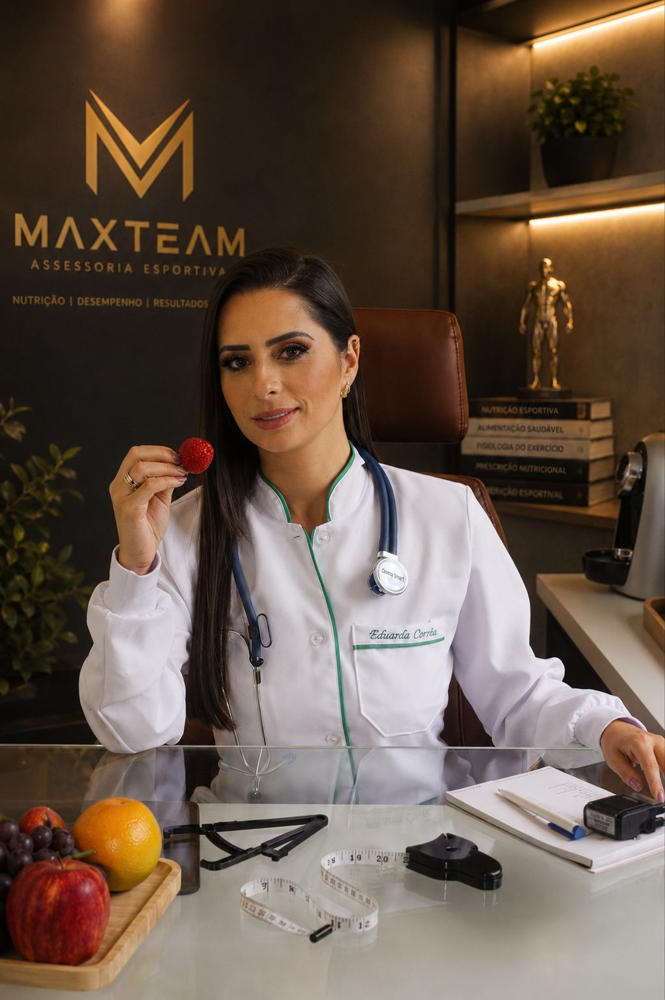
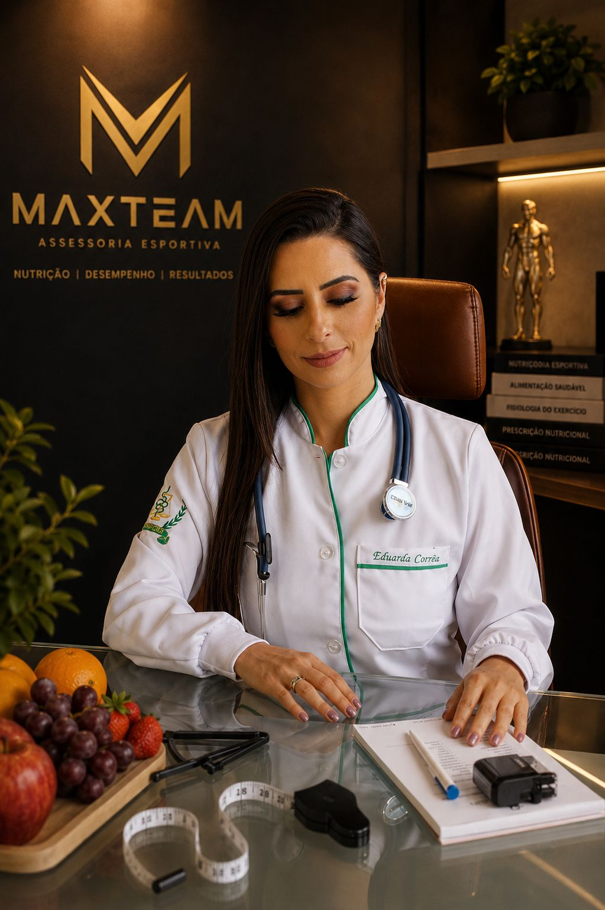
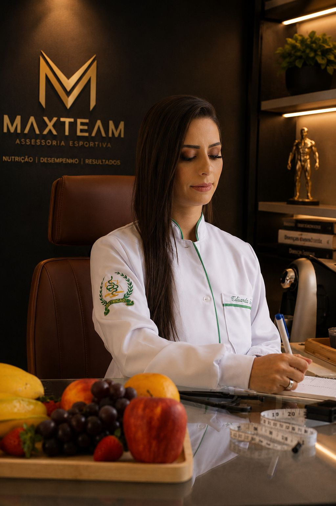
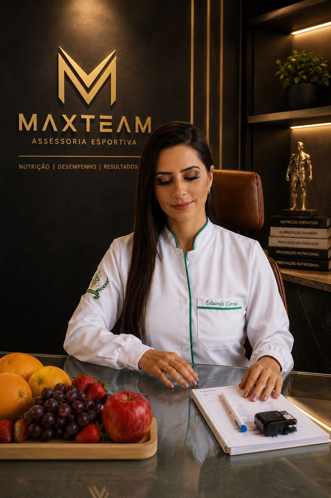

Viva sua melhor performance
Nutrição esportiva para evoluir no treino, na composição corporal e na saúde.
Sou Eduarda Corrêa, nutricionista CRN-8 20230 e integrante da equipe Max Team.
Rotina, treino, exames, composição corporal e objetivo entram na mesma leitura.
Refeições, horários, finais de semana e preferências organizados com clareza.
Ajustes conforme evolução, aderência, medidas, sintomas, treino e recuperação.
Para quem é
Para quem treina, se esforça e precisa de uma estratégia alimentar mais clara.
A consulta é indicada para quem quer evoluir sem depender de tentativa e erro: comer melhor, ajustar suplementação e entender o que realmente faz sentido para o objetivo.

Quem vai cuidar de você
Nutrição esportiva dentro da rotina de quem treina.
A Eduarda faz parte da equipe Max Team Assessoria Esportiva e conduz um acompanhamento próximo para transformar avaliação nutricional em estratégia prática, com metas claras e ajustes ao longo do processo.
Além do atendimento nutricional, ela também atua com a MaxTeam Suplementos, orientando escolhas que façam sentido para treino, rotina, objetivo e saúde.
Como funciona
Da avaliação ao ajuste: um processo pensado para evolução esportiva.
A consulta conecta alimentação, treino, suplementação e rotina em uma estratégia que você entende, aplica e acompanha.

-
01
Diagnóstico
Entender corpo, treino e rotina.
Exames, medidas, sono, fome, preferências e objetivo entram na mesma leitura.
-
02
Métricas
Definir metas que possam ser acompanhadas.
Composição corporal e dados de evolução mostram o que está funcionando.
-
03
Execução
Montar uma estratégia alimentar possível.
Conduta para treinos, trabalho, horários, finais de semana e preferências alimentares.
-
04
Acompanhamento
Ajustar para evoluir com consistência.
Retornos para revisar progresso, energia, recuperação, digestão e suplementação.

Sem fórmula pronta
Nutrição boa é aquela que cabe na sua rotina e melhora sua resposta no treino.
O objetivo é construir um caminho que você consiga repetir, ajustar e manter, com alimentação e suplementação bem direcionadas.
Quero um acompanhamentoAcompanhamento
Um método simples para sair da dúvida e agir com direção.
Cada etapa tem um papel: entender o ponto de partida, criar a estratégia e ajustar o plano conforme a resposta do seu corpo.
Entendimento de contexto, exames, treino, sono, fome, horários e dificuldades.
Conduta com metas claras, substituições possíveis e orientação de suplementos quando fizer sentido.
Revisão de medidas, sintomas, performance, aderência e próximos ajustes.
Na prática
Ambiente Max Team para avaliação, orientação e acompanhamento.




Próximo passo
Comece com uma avaliação nutricional estratégica.
Envie uma mensagem para consultar horários, formato de atendimento e entender qual acompanhamento faz mais sentido para seu objetivo.
Nutrição esportiva integrada à rotina de treino e aos objetivos do aluno Max Team.
Onde encontrar
Atendimento conectado à estrutura MaxTeam.
A Eduarda faz parte da equipe Max Team Assessoria Esportiva e também atua com orientação na loja MaxTeam Suplementos.
MAXTEAM SUPLEMENTOS - Av. Presidente Arthur da Silva Bernardes, 709 - Portão, Curitiba - PR, 80320-300